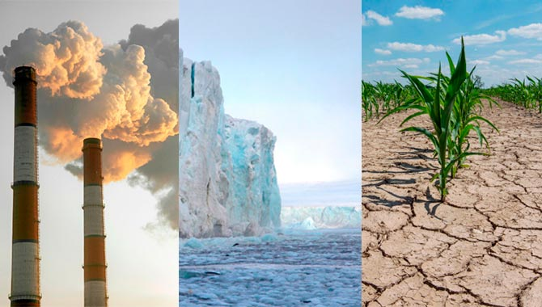
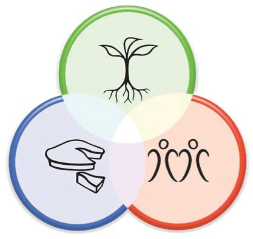

GUSTOS E INTERESES
Mi otro gusto es tocar el acordeon

LA TIERRA ES SUFICIENTE PARA TODOS
PERO NO PARA LA VORACIDAD DE LOS CONSUMIDORES
El Día de la Tierra es un día celebrado en muchos países el 22 de abril. Su promotor, el senador estadounidense Gaylord Nelson, instauró este día para crear una conciencia común a los problemas de la superpoblación, la producción de contaminación, la conservación de la biodiversidad y otras preocupaciones ambientales para proteger la Tierra. Es un día para rendir homenaje a nuestro planeta y reconocer a la Tierra como nuestro hogar y nuestra madre, así como lo han expresado distintas culturas a lo largo de la historia, demostrando la interdependencia entre sus ecosistemas y los seres vivos que la habitamos.1
El Planeta Tierra es el planeta donde nosotros vivimos y habitamos. Si uno pensara en todo lo que contiene nuestro planeta, en la cantidad de especies que conviven, en las obras monumentales que el hombre ha creado en él, termina por darse cuenta que la Tierra es inmensa y que ofrece un equilibrio perfecto en cuanto naturaleza, que lamentablemente el hombre se ha encargado de manipular aun cuando se conozca que dicha manipulación trae serios problemas poniendo en peligro especies de seres vivos, como está ocurriendo con especies vegetales y animales. ... de Importancia: http://www.importancia.org/planeta-tierra.php
El Cambio Climático es un cambio significativo y duradero de los patrones locales o globales del clima, las causas pueden ser naturales, como por ejemplo, variaciones en la energía que se recibe del Sol, erupciones volcánicas, circulación oceánica, procesos biológicos y otros, o puede ser causada por influencia antrópica (por las actividades humanas), como por ejemplo, a través de la emisión de CO2 y otros gases que atrapan calor, o alteración del uso de grandes extensiones de suelos que causan, finalmente, un calentamiento global.
1.- Separa la basura: En un bote coloca los restos de comida (esto es la basura orgánica), y en otro deposita el cartón, vidrio, papel y plástico que ya no necesitas. Con esto ayudarás a que el proceso de reciclaje sea más fácil. Además, los restos inorgánicos puedes venderlos o reutilizarlos.
2.- Lleva tus propias bolsas: Seguramente tienes bolsas de tela en casa, cuando vayas al supermercado evita las bolsas de plástico pues éstas tardan en degradarse 150 años.
3.- Consume la menor cantidad de productos desechables: Productos como los trastes de plástico y unicel generan una gran cantidad de basura. Piensa dos veces antes de emplearlos en tu próxima reunion. Además, desintegrarse en el ambiente les lleva de 100 a mil años.
4.- Prefiere las pilas recargables en vez de las communes: Así evitarás estar comprando y desechando baterías, además las pilas son muy dañinas y contaminan el agua. También usa focos ahorradores, cambia tu calentador por uno solar, y reutiliza el agua que sale de tu lavadora para el patio o el baño.
5.- Modera el uso de pañuelos faciales: Mientras menos pañuelos, servilletas y papel de baño uses, estarás generando menos basura. Incentiva a tus hijos para que hagan lo mismo.
El icono de la pequeña planta representa el crecimiento organico, un ingrediente clave para sostener la vida en la Tierra.
El cuidado de la Tierra se puede tomar como el cuidado del suelo vivo. El estado del suelo suele ser la mejor medida de la salud y el bienestar de la sociedad. Hay muchas buenas tecnicas para cuidar el suelo, pero el mejor metodo para ver si el suelo esto sano es ver cuanta vida crece ahí.
Nuestros bosques y ríos son los pulmones y las venas del planeta, que ayudan a la Tierra a vivir y respirar, manteniendo muchas diversas formas de vida. Todas las formas de vida tienen su propio valor intranseco, y necesitan ser respetadas por las funciones que cumplen , aunque no las veamos son utiles para nuestras necesidades.
Reduciendo nuestro consumo de cosas, reducimos el impacto en el medio ambiente, lo cual es el mejor lugar para cuidar todas cosas vivas.
